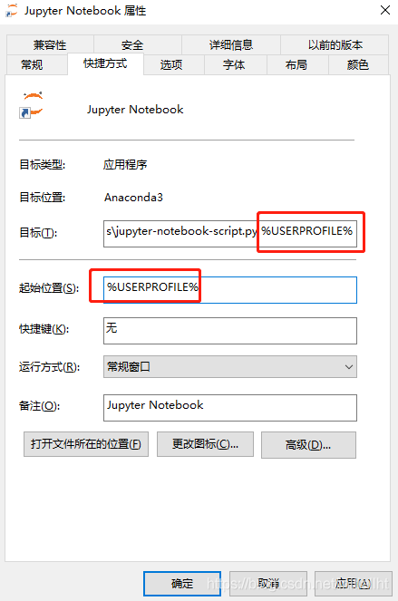
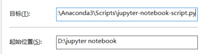
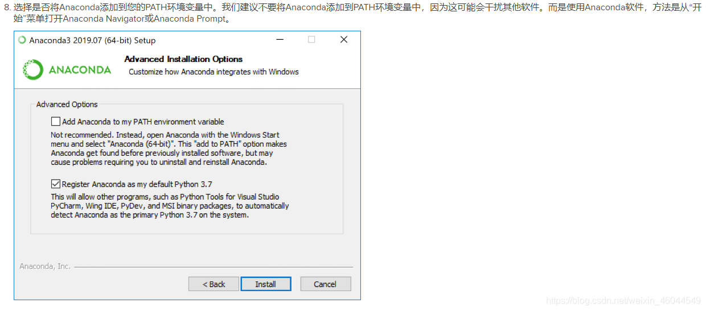
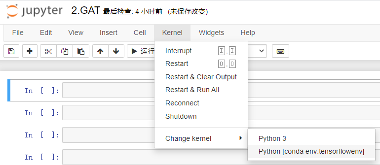
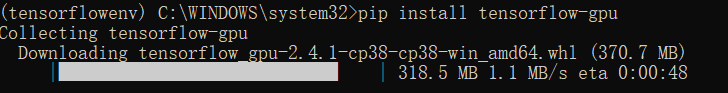
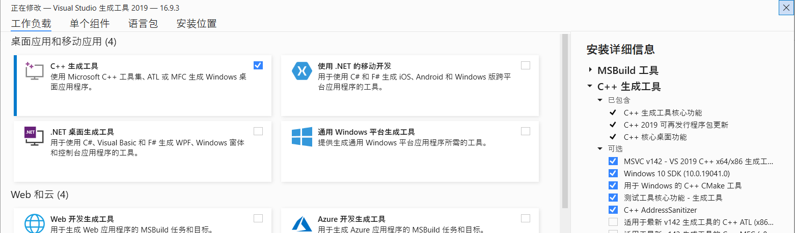

1. Jupyter Notebook 安装
前期准备工作
安装Jupyter Notebook的前提是需要安装了Python（3.3版本及以上，或2.7版本）。
如果你是有经验的Python玩家，想要尝试用pip命令来安装Jupyter Notebook，那么请看以下步骤，接下来的命令都输入在终端当中。
把pip升级到最新版本
- Python 3.x
1 | pip3 install --upgrade pip |
- 注意：老版本的pip在安装Jupyter Notebook过程中或面临依赖项无法同步安装的问题。因此强烈建议先把pip升级到最新版本。
如果报错：
2
>
>
则需要输入：
2
>
>
然后：
2
>
安装Jupyter Notebook
- Python 3.x
1 | pip3 install jupyter |
默认端口启动
在终端中输入以下命令：
1 | jupyter notebook |
端口关闭
Ctrl+C 两次
上述操作在安装Anaconda后都是不需要的，唯一要做的是修改默认启动路径
找到Jupyter Notebook的快捷方式右键打开“属性”
注意到目标有一个“%USERPROFILE%”，这其实就是你系统环境变量里的用户目录，每次在用这个快捷方式进入Jupyter的时候，不管你怎么设置，都会将这个变量值传给目标，也就是Jupyter，然后再启动。

删除目标中%USERPROFILE%，并将起始位置改为自己配置的路径。

2. 安装Anaconda
在坚持了一段时间后还是放弃之前的坚持，没有Anaconda在安装Tersorflow的时候会很麻烦，所以，装！
在安装中会有这么一段：

这里第一项“添加Anaconda到环境变量”，如果勾选，可能会影响到其他软件，如果不勾选，我们以后用conda安装某些包的时候就不能在cmd下安装了，需要从开始菜单中打开Anaconda Navigator或Anaconda Prompt。然后在里面用conda等命令。
这里并不是什么无法接受的，所以我选择不打勾。
3. 创建虚拟环境并添加至jupyter
为什么要装虚拟环境
新手一开始听说虚拟环境会觉得没有必要，听着很麻烦，需要什么包安装就是了，但是随着学习的深入，比如学到了深度学习的内容，需要安装keras、tensorflow框架等，这时候如果盲目去装，就容易出问题，这时候就需要创建一个虚拟环境。
为什么呢？
最简单的例子假设框架中需要安装A包，安装A包的前提条件是B包的2.1版本和C包的1.2版本都有，这时候你原来系统里的B包可能是3.2版本，为了装A包就需要降版本，但是系统里原来的D包需要3.2版本的B包，所以B包降了版本，可能导致D包无法使用。
创建过程
- 在原始控制台输入
conda --version可以检测anaconda环境是否安装成功。输出conda版本为成功，例如输出：conda 4.3.30 - 以win10系统为例，点击桌面开始菜单，找到anaconda应用，里面有Anaconda Prompt（conda控制台）选项，使用管理员身份运行
- 例如我想创建一个叫做“tensorflowenv”的python3.6的虚拟环境，在界面输入
conda create -n tensorflowenv python=3.8（linux系统下同样，直接在终端输入） - 运行完毕后，此时需要激活虚拟环境，输入
activate tensorflowenv - 如果此时已经显示例如：(tfenv) C:\Users\ 则表示已经进入到虚拟环境里了，在这个状态下就可以安装你所需要的包了
- 下一次进入虚拟环境依旧是从Anaconda Prompt（conda控制台）进入，直接
activate tensorflowenv激活即可。 - 退出环境使用
conda deactivate即可。
在 Jupyter Notebook激活conda环境
在 Anaconda Prompt 激活环境activate tensorflowenv
安装ipykernel：conda install ipykernel
将选择的conda环境注入Jupyter Notebook：python -m ipykernel install --user --name tensorflowenv --display-name "Python [conda env:tensorflowenv]"
结果如下：

另外删除kernel环境： jupyter kernelspec remove 环境名称
在切换环境时如果无法连接，可安装conda install nb_conda （但没解决我的问题）
可以看到报错代码里面有个zmq文件夹下面的，参考网上的一些做法，然后连猜带蒙重装了pyzmq，问题得以解决。
pip uninstall pyzmq然后pip install pyzmq
4. 配置TensorFlow环境及后续
在 Anaconda Prompt 激活环境activate tensorflowenv
安装tensorflow：pip install tensorflow-gpu

安装Keras：pip install keras
Keras 是一个用 Python 编写的高级神经网络 API，它能够以 TensorFlow, CNTK, 或者 Theano 作为后端运行。Keras 的开发重点是支持快速的实验。能够以最小的时延把你的想法转换为实验结果，是做好研究的关键。
基于Keras API还有一个库Spektral，但目前不支持Windows所以先不管了。
5. 配置Pytroch
根据情况选择合适的版本，会自动生成相应的安装代码，在终端中输入即可
- 关于查看CUDA版本，可从 控制面板->NVIDIA控制面板->系统信息(左下角)->组件 中查看
- 若链接出错可选择搭梯子再试，如果还不行就用下面的旧版本的本地安装方法
- 我的解决方法是安装了最新的python3.9就行了
- 千万要对齐 CUDA版本、python版本(32/64位)
6. 安装第三方库报错问题
有一些第三方库，通过conda install安装会提示找不到，此外可能是用C语言写的，用pip install安装会报错，其中靠最后部分有这么一句：
1 | error: Microsoft Visual C++ 14.0 is required.Get it with "Microsoft Visual C++ Build Tools":https://visualstudio.microsoft.com/zh-hans/visual-cpp-build-tools/ |
复制链接进入微软下载Visual Studio，安装后，选择安装其中的C++扩展组件，保留默认扩展(必须保留，见下图右边)，可更换安装地址。完成后重启电脑就可以使用pip install进行安装了。

网上搜集到的资料大部分是老版本的Visual Studio，没有上面这么多选项（也可能是人家没截图）
7.本地安装非官方二进制库
其实在完成了上面步骤后基本不会存在报错了，不过有时候难免会遇到需要本地安装的情况，这里给出分官方二进制库的下载链接：
https://www.lfd.uci.edu/~gohlke/pythonlibs/
根据当前python版本下载对应的whl文件后，在cmd下进入whl所在的文件夹，最后再输入pip install xx.whl进行安装就可以了
关于cmd中cd的简单使用：
直接跳转到E盘根目录
e:进入E盘A文件夹下
cd e:\A这里的路径可以直接从文件夹左上复制过来
8.Linux原生环境下配置Python环境
1.去镜像站下载
清华镜像站：https://mirrors.tuna.tsinghua.edu.cn/anaconda/archive/
时间倒叙排列，找个最新版的64位的Linux版本，我下载的是Anaconda3-2020.11-Linux-x86_64.sh，复制下载链接，然后在终端中输入wget+链接，比如wget https://mirrors.tuna.tsinghua.edu.cn/anaconda/archive/Anaconda3-2020.11-Linux-x86_64.sh
2.安装
下载的安装包可以看到就在个人根目录下，其实可以直接安装的，会默认自动生成一个anaconda3文件夹安装进里面，当然稳妥起见，我们新建一个文件夹newfold把安装包放进去，文件移动命令为：mv Anaconda3-2020.11-Linux-x86_64.sh /home/yourname/newfold
yourname 换成个人账号名，后面也是
然后就可以开始安装了，终端依次输入：
cd /home/yourname/newfold
bash Anaconda3-2020.11-Linux-x86_64.sh
在安装的时候会碰到一路让你Enter和输入yes，无脑下去就行。
3.环境配置
这时候你进入到安装目录下cd /home/yourname/anaconda3输入conda -V，会提示-bash: conda: command not found
因此，需要修改配置文件，其所在位置为个人根目录文件夹下的 ~/.bashrc 可以看到是一个隐藏文件
直接打开，在最后一行加入export PATH=$PATH:【你的安装目录】
例：export PATH=$PATH:/home/yourname/anaconda3/bin
保存后退出，在个人根目录下（输入cd即可回到个人根目录）输入 source ~/.bashrc
4.检验
输入conda -V 返回当前anaconda版本即表明完成